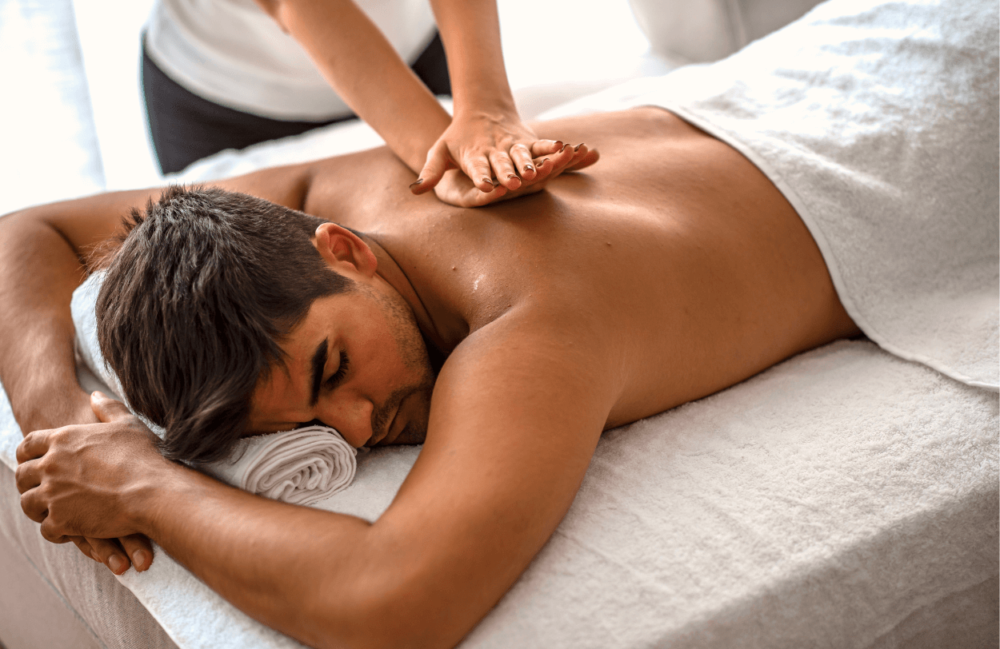

Klasická masáž
Klasická masáž je obľúbenou masážou, ktorá prináša hĺbkové uvoľnenie, odstraňuje únavu, preťaženosť, svalové kŕče, obnovuje pohyblivosť stuhnutých a bolestivých svalov. Pozitívne pôsobí proti stresu aj depresii, odbúrava napätie, napomáha k psychickej rovnováhe. Patrí k najviac využívaným druhom masáže. Pri klasickej masáži dochádza k prekrveniu kože, vyprázdňovaniu povrchových žíl, lymfatických ciev, k sekrécii potných žliaz, vstrebávaniu opuchov či výronov, zlepšuje výživu a činnosť tkanív, kĺbov a šliach. Zmierňuje bolesti. Reflexne a zmenou prekrvenia masáž ovplyvňuje vzdialené orgány a má celkové pozitívne účinky na organizmus. Má povzbudzujúci účinok na telesnú výkonnosť, centrálny nervový systém, podporuje imunitu. Upravuje spánok, pôsobí relaxačne, pomáha uvolňovať psychické napätie.
Pre koho je vhodná?
 Vhodná je najmä pre ľudí so sedavým zamestnaním, pri dlhej práci za počítačom, pre ženy trpiace bolesťami hlavy a šije pred menštruáciou, pre ľudí s migrénami, so stuhnutým krkom a ramenami. Vzhľadom na jej účinnosť pri uvoľňovaní krčnej chrbtice, zvykneme masáž mäkkými technikami zakomponovať do úvodu takmer každej masáže.Klasická masáž je vhodná pre všetkých, hlavne pre ľudí s ochoreniami pohybového aparátu, s bolesťami chrbta, jemná pri chronických reumatických ochoreniach, pri rekonvalescencii. Pre ľudí s poruchami spánku, a pre tých, ktorí potrebujú znížiť psychické napätie a stres.
Pre koho nie je vhodná?
Klasická masáž nie je vhodná pre osoby trpiace srdcovou slabosťou alebo majúce srdcový stimulátor. Tiež sa neodporúča pre ľudí s horúčkovými, infekčnými ochoreniami, akútnym zápalom alebo krvácavými ochoreniami. Ďalej by sa jej mali vyvarovať pacienti s nádorovými ochoreniami a ochoreniami dutiny brušnej, ktoré sú spojené so zápalmi, ako sú napríklad appendicitis alebo cholecystitis, či krvácaním, ako žalúdočný alebo dvanástnikový vred a nádory tráviaceho traktu. Masáž nie je vhodná ani pre osoby s pokročilou aterosklerózou, osteoporózou a pre tehotné ženy. Ľudia s kŕčovými žilami (varixy) môžu masáž podstúpiť len s obmedzeniami a po konzultácii so špecialistom.